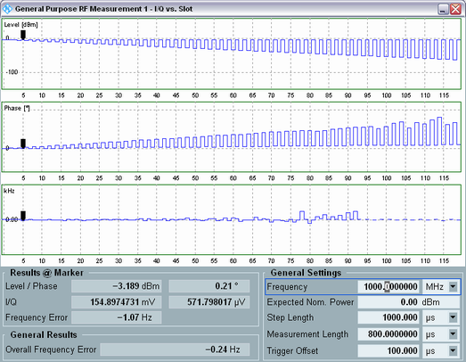

Measurement Diagram
The step functions in the diagrams show the measured results for all measurement steps. The result panels below contain the numeric results in a single, selectable measurement interval plus the overall frequency error.

I/Q vs. slot measurement results: diagram view
- Diagrams:
The diagrams show the average results at all measurement steps. The curves correspond to a sequence of consecutive subsweeps, each containing <step count> results (see "Power Steps and Subsweeps"). The number of results per measurement curve is equal to the product <step count> * <no. of subsweeps>.– Use "Display > Diagrams" to switch between the "Level / Phase" and "I, Q" representation and to show or hide the frequency error diagram. – Use the other hotkeys associated with the "Display" softkey to optimize the appearance of the screen. – Use the "Marker" hotkeys to position markers on the traces of the active view. - "Results @ Marker" area:
This area shows the average results at a single measurement step, selected via a marker. The results include the level, phase, I/Q amplitudes and the frequency error. - "General Settings" area:
This area provides an overview of the essential current settings of the I/Q vs. slot measurement. Open the configuration dialog to access and modify all settings.
The I/Q amplitude results are based on frequency-corrected RF signals, see "Measurement Procedure". The measurement results are related as follows:
- Phase = arctan (Q / I)
- Level / dBm = 10 * log ((I2 + Q2) / 50 Ω / mW)
- Phase convention: The phase in the first step of each measurement is set to zero degrees.
- The "Overall Frequency Error" is the arithmetic mean value of the "Frequency Error" values at all measurement steps shown in the diagrams, except the steps which are potentially invalid, see "Measurement Procedure".